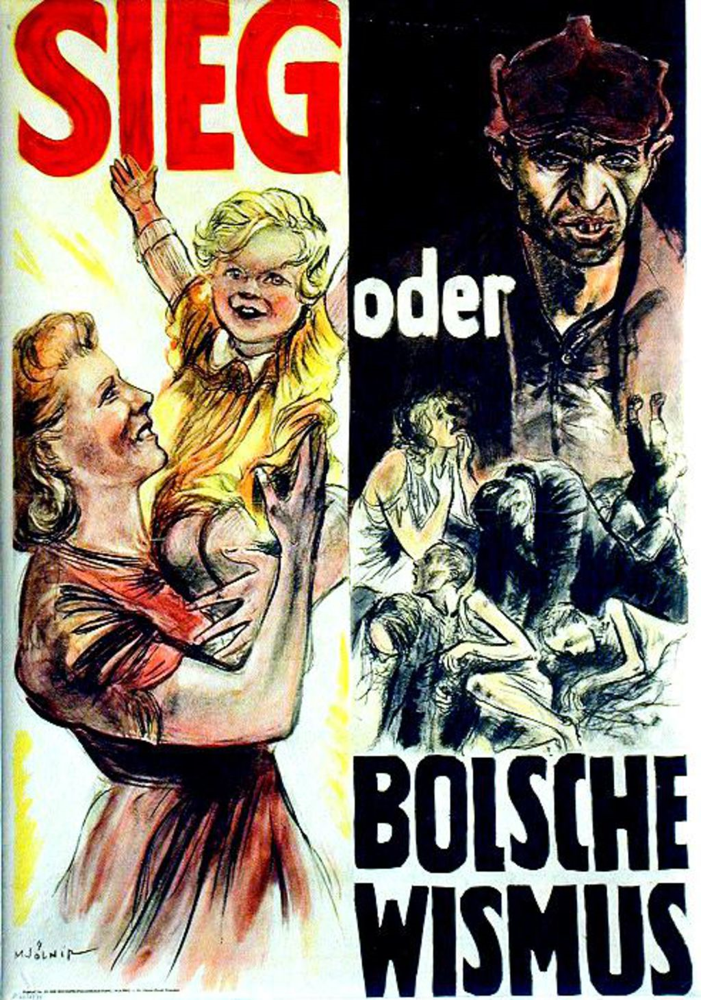

Ein wichtiger Teil der NS-Propaganda war die Kriegspropaganda. Sie diente vor allem der Überzeugung des Volkes von der Notwendigkeit eines Krieges als Verteidigung gegen Feinde und der Rechtfertigung dieses Krieges.
Ab August 1939 berichteten Zeitungen und Rundfunk fast täglich über angebliche polnische Grenzverletzungen und Gewaltakte an der in Polen lebenden deutschen Minderheit. Der Überfall auf Polen sollte so als "gerechte Strafaktion" für die Provokationen erscheinen.
Im Mittelpunkt der Berichterstattung war im Zweiten Weltkrieg vor allem
Die Deutsche Wochenschau für die Joachim Goebbels verantwortlich war, die noch vor beginn eines Kinofilmes geschaltet wurden.
Die wohl berühmteste seiner Reden war die Sportspalastrede vom Februar 1943 in der er die Bevölkerung zum „Totalen Krieg“ aufrief, steht beispielhaft für die Manipulation der Bevölkerung. Durch antisemitische Propaganda und Aktionen wie die Reichsprogromnacht 1938 bereitete er ideologisch die Deportation und anschließende Vernichtung von Juden und anderen Minderheiten vor und gilt damit als einer der entscheidenden Wegbereiter des Holocaust.
Den Propagandakompanien waren auch Künstler zugeteilt, die das Kriegsgeschehen an den verschiedenen Fronten und den Militäralltag in den besetzten Gebieten als Kriegsmaler oder Pressezeichner festhalten sollten. Ihre Gemälde und Zeichnungen waren in Zeitungen und Zeitschriften, auf Werbeplakaten und Postkarten sowie in zahlreichen Büchern zu sehen. Sie idealisierten das Bild des Soldaten und der Wehrmacht als Verteidiger der im Kampf geeinten "Volksgemeinschaft". Sie sollten vor allem die Tugend, Kameradschaft und Opferbereitschaft der Soldaten festhalten.
Zum Ende des Krieges wurde vor allem die demotivierende „Gerüchtemacherei“ in der Bevölkerung dem NS-Regime gefährlich.
Wenig später wurden sie durch Plakate mit dem erklärenden Zusatz "Pst!" und "Pst! Feind hört mit" ersetzt. → bei der Bevölkerung hielt sich die Akzeptanz in Grenzen. Erfolgreicher dagegen waren die Kampagnen gegen die Sowjetunion.
Als jedoch ab 1942 die Erfolgsmeldungen von der Ostfront ausblieben, wurde die deutsche Bevölkerung von der dauerhaften Durchhaltepropaganda auf den "Totalen Krieg" und zunehmend auf eine größere Opferbereitschaft eingestellt.
Heroische Darstellung der Soldaten stand im Widerspruch zu den tatsächlichen Erfahrungen an der Front und dem Massensterben.